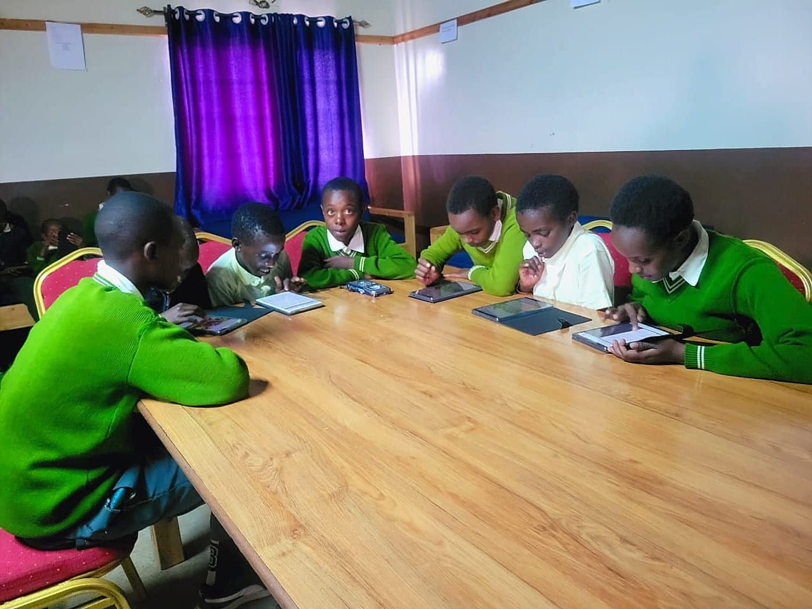

Nairobi, Kenya
Hillary Atindah George
Digital Transformation, EdTech and Technology Programme Leader
Programmes that reach the last school, and prove it. I design and lead digital learning programmes for schools and young people in low-resource settings, with AI tools, cybersecurity safeguards and data systems built in from day one. Five years since 2021, nearly three of them leading education programmes.
- AI and digital innovation
- Cybersecurity and digital safety
- Data and impact measurement
- Programme design and delivery
- 5,000+Learners reached
- 798+Teachers trained
- 23+Schools covered
- 95%Recent cohort pass rate
- 300+Girls in STEM mentored
- 25MKES annual programme budget
Selected work
Don't take my word for it. Click it.
Programmes delivered with Human Practice Foundation, in partnership with Power Learn Project Africa. Certified by the LEGO Foundation, the Raspberry Pi Foundation (with Google DeepMind) and EdTech Hub.
Two programmes I led and four tools I built, each with its results and a live link. Pick one and see it working.

From herding to paid work online
A learn-to-earn IT Academy for pastoralist youth in the Maasai Mara. Read the case
Digital literacy, staff room first
A school programme built from zero across the Mt Kenya region. Read the case
Every enkaji is a classroom
Six Bricks play on the family phone for Mothers Who Teach. Open Enkaji Play (opens in a new tab)
Carbon literacy on a herder's phone
A Kiswahili and English learning companion, taught as a conversation. Open the demo (opens in a new tab)
Security you can prove
A security workspace for schools, NGOs and small businesses. Open the beta (opens in a new tab)
Meet the graduates
The HPF Talent Hub: academy trainees' profiles for employers. Open the Talent Hub (opens in a new tab)Ways to work together
Hire me, bring me in, or build with me.
A full-time role, a consulting brief or a programme to build together: pick the door that fits.
Hire me
Full-time leadership of digital transformation, EdTech and AI in education programmes, from January 2027. Remote, hybrid or on-site.
Talk about a role → For NGOs and fundersBring me in
Programme design, impact measurement, teacher training, AI adoption and digital safety, as a short sprint or full delivery.
See consulting services → For partnersBuild with me
Holding a grant or a programme idea for a hard-to-reach community? I co-design and run it with you, with the evidence built in, the way SELution and Enkaji Play began.
Propose a partnership →The first step is a short conversation about your programme. Then I write a brief diagnostic: what it claims, what it can evidence, and the gap between them. See how an engagement runs →